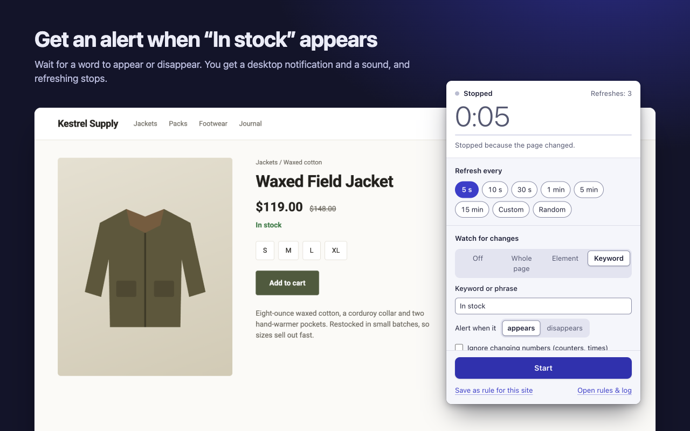
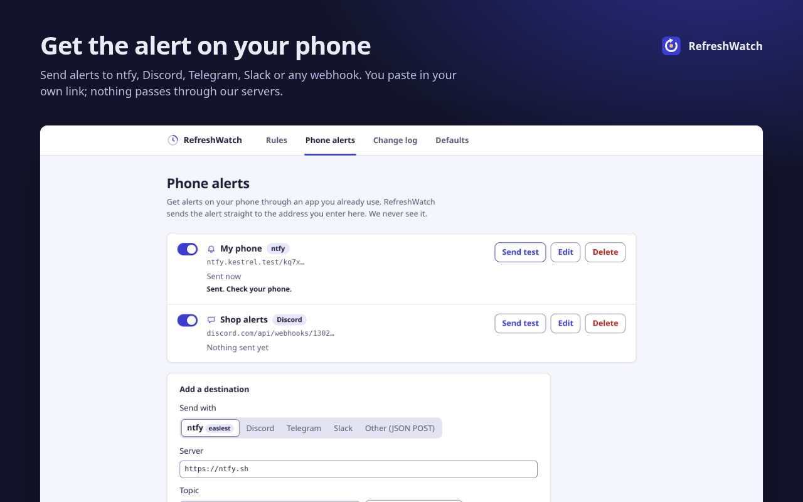

Restock alert: know when it's back in stock
Sold out again? Leave the product page open in Chrome. RefreshWatch reloads it, looks for the words that mean it's back, such as “In stock” or “Add to cart”, and sends an in stock alert to your desktop or phone.
Set up a restock alert in three steps
- Open the product page and click the RefreshWatch icon. Under What are you waiting for?, choose Restock. That sets a random interval between 45 and 90 seconds, a Keyword watch that alerts when “In stock” appears, an alarm sound, and stopping on a match.
- Change the keyword to what the page says when the product is back, such as “Add to cart” or “Ships today”. Or switch to disappears and type the sold-out wording, such as “Sold out” or “Out of stock”. Capital letters don't matter.
- If you've set up a phone destination, check that Send to my phone is on (the preset turns it on for you). Click Start. Chrome asks to let RefreshWatch read that one site; allow it.

When the word shows up you get a desktop notification and a sound, and refreshing stops so the page stays as it was. If the word is already on the page when you press Start, you're told right away, which is a quick way to check the setup.
Pick words that only mean “back in stock”
A keyword is looked for in the whole page's visible text. If “Add to cart” also appears under other products on the same page, it matches at once. Some ways around that:
- Use the sold-out wording with disappears, if it only appears for this product.
- Use a longer phrase from the product's own box, such as “Only 3 left” or “In stock. Ships”.
- Choose Element instead, click Pick element, and pick just the availability line. You're alerted when that line changes. The website change alert guide shows how.
Watching several products? Open each in its own tab and start a watch in each one.
Get the in stock alert on your phone
Restocks rarely wait for you to be at your desk. Add a destination on the options page under Phone alerts, and the alert also goes to ntfy, Discord, Telegram, Slack or any webhook. The phone alerts guide has the steps for each.

Big shops and sneaker drops
A restock alert works on store pages you can open in Chrome, from Walmart to a sneaker brand's drop page. Big shops and sneaker sites often protect themselves against fast reloads, and may show a check page or block you for a while. The Restock preset's random 45 to 90 seconds is gentler than a fixed few seconds. Use seconds only for a short burst around a drop with a known time.
RefreshWatch tells you; you buy. It doesn't add to cart, check out, join queues for you or get past captchas. For a price instead of stock, see the price drop alert guide.
Good to know
RefreshWatch checks pages in open tabs, while Chrome is running. It doesn't check in the cloud when your computer is off or asleep.
Keep the product page open in its tab. Closing the tab stops the watch.
Respect each shop's terms. A minute or more between reloads is usually enough.
Questions
Will RefreshWatch buy the item for me?
No. It alerts you on your desktop and, if you set it up, your phone. You add to cart and check out yourself.
Does the restock alert work when my computer is off?
No. RefreshWatch checks pages in open tabs while Chrome is running. For alerts while you're away from the screen, leave Chrome open and turn on phone alerts.
How often should it check for a restock?
The Restock preset reloads at a random time between 45 and 90 seconds. That's usually fast enough and kinder to the shop. Use a few seconds only for a short time around a drop.
What if the shop uses different words?
Type the page's exact wording, such as “Add to cart” or “Back in stock”, or alert when “Sold out” disappears. Capital letters don't matter.
Can I watch more than one product?
Yes. Open each product in its own tab and start a watch there. Each tab has its own timer and keyword.